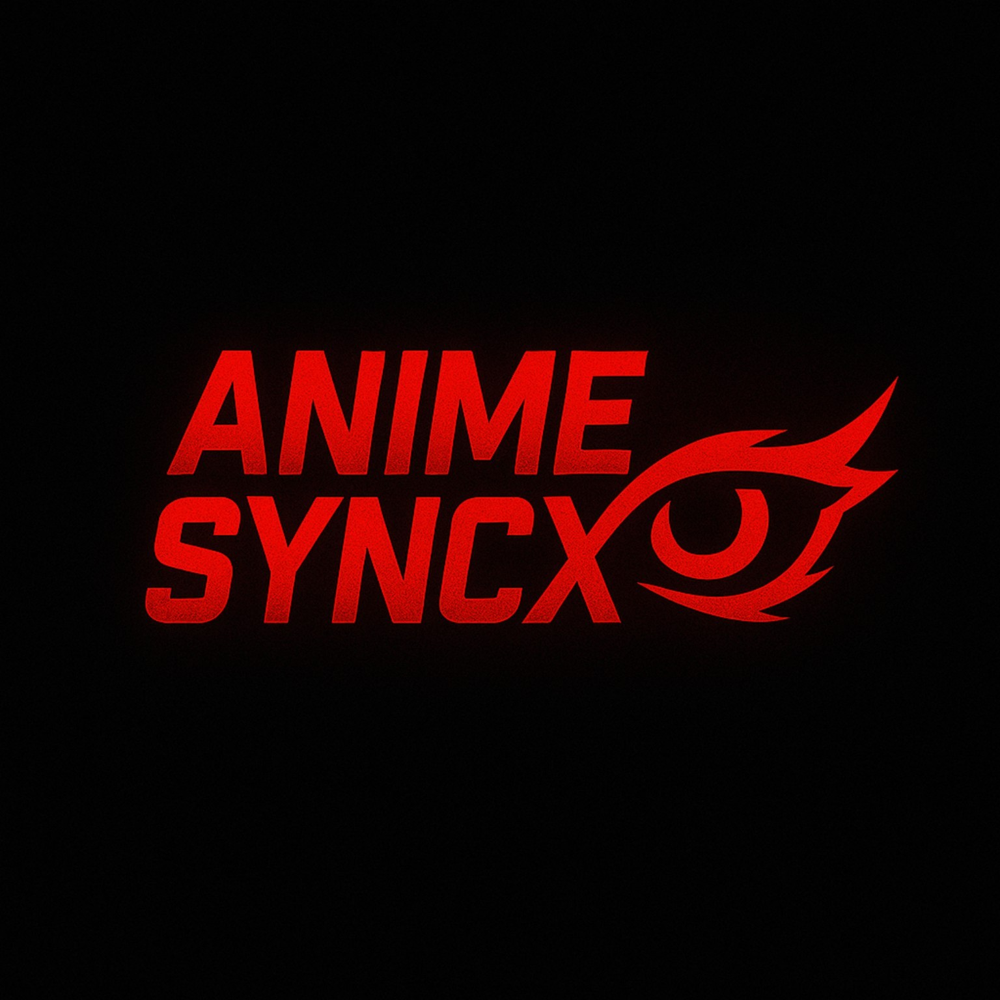

Edit 02
Anime Edit / Beat Sync

AnimeSyncXANIME VIDEO EDITOR
High-quality anime edits with smooth transitions, synced beats, creative effects and cinematic visuals.
FEATURED WORK
A selection of AnimeSyncX edits.
FEATURED EDIT
Anime edit focused on beat sync, transitions and visual effects.
Anime Edit / Beat Sync
Anime Edit / Transitions
Anime Edit / Velocity
Anime Edit / VFX
Anime Edit / Short-form
FEEDBACK
Ratings and comments can be connected to a review service later.
WHAT I DO
Stylized short-form anime edits built around strong visuals and pacing.
Clips, effects and transitions timed tightly to the music.
Clean and creative transitions designed to keep the edit flowing.
Speed changes and movement used to create energetic edits.
Glow, shake, blur, distortion and other effects for impact.
Vertical edits prepared for modern short-form platforms.
TOOLS & SKILLS
ABOUT ME
I’m an anime video editor focused on clean timing, creative transitions, effects and polished short-form edits. I aim to make every beat, movement and visual feel intentional.
PROCESS
Share the edit idea and requirements.
Provide footage, music and references.
The edit is created around your requested style.
Review the result and request changes.
Receive the finished edit in the agreed format.
FAQ
Anime edits, beat-sync edits, transition edits, velocity edits, VFX edits and short-form content.
CapCut is currently part of my editing workflow.
Yes. You can provide references and explain the style you want.
Contact details can be added when you are ready for client work.
LET'S WORK
Client contact details and pricing will be added when you are ready.